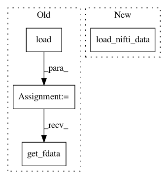

6d16dc2aa1d9bebe3d645824550baf5e65230b24,dipy/workflows/tests/test_align.py,,test_reslice,#,23
Before Change
reslice_flow.run(data_path, [1.5, 1.5, 1.5], out_dir=out_dir)
out_path = reslice_flow.last_generated_outputs["out_resliced"]
out_img = nib.load(out_path)
resliced = out_img.get_fdata()
npt.assert_equal(resliced.shape[0] > volume.shape[0], True)
npt.assert_equal(resliced.shape[1] > volume.shape[1], True)
npt.assert_equal(resliced.shape[2] > volume.shape[2], True)
After Change
reslice_flow.run(data_path, [1.5, 1.5, 1.5], out_dir=out_dir)
out_path = reslice_flow.last_generated_outputs["out_resliced"]
resliced = load_nifti_data(out_path)
npt.assert_equal(resliced.shape[0] > volume.shape[0], True)
npt.assert_equal(resliced.shape[1] > volume.shape[1], True)
npt.assert_equal(resliced.shape[2] > volume.shape[2], True)
In pattern: SUPERPATTERN
Frequency: 3
Non-data size: 4
Instances
Project Name: nipy/dipy
Commit Name: 6d16dc2aa1d9bebe3d645824550baf5e65230b24
Time: 2019-12-31
Author: skab12@gmail.com
File Name: dipy/workflows/tests/test_align.py
Class Name:
Method Name: test_reslice
Project Name: nipy/dipy
Commit Name: 6d16dc2aa1d9bebe3d645824550baf5e65230b24
Time: 2019-12-31
Author: skab12@gmail.com
File Name: dipy/tracking/tests/test_life.py
Class Name:
Method Name: test_FiberFit
Project Name: nipy/dipy
Commit Name: 6d16dc2aa1d9bebe3d645824550baf5e65230b24
Time: 2019-12-31
Author: skab12@gmail.com
File Name: dipy/workflows/tests/test_denoise.py
Class Name:
Method Name: test_mppca_flow